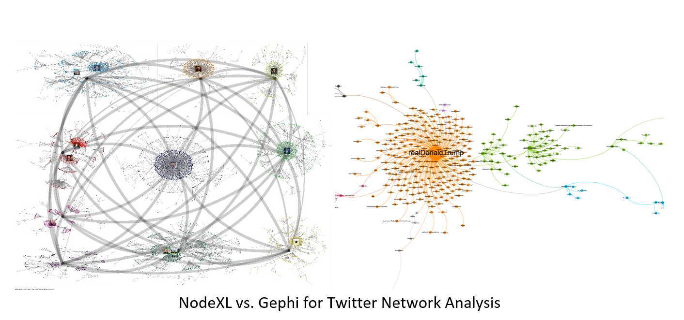
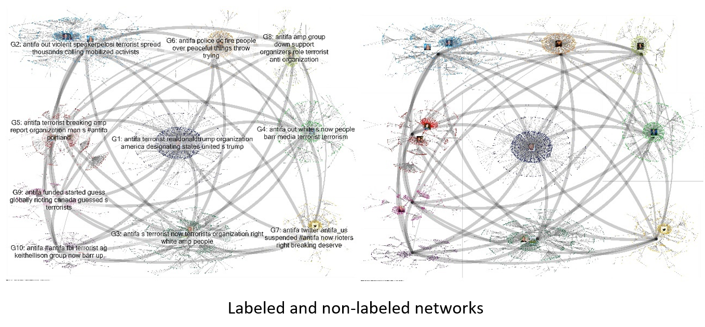
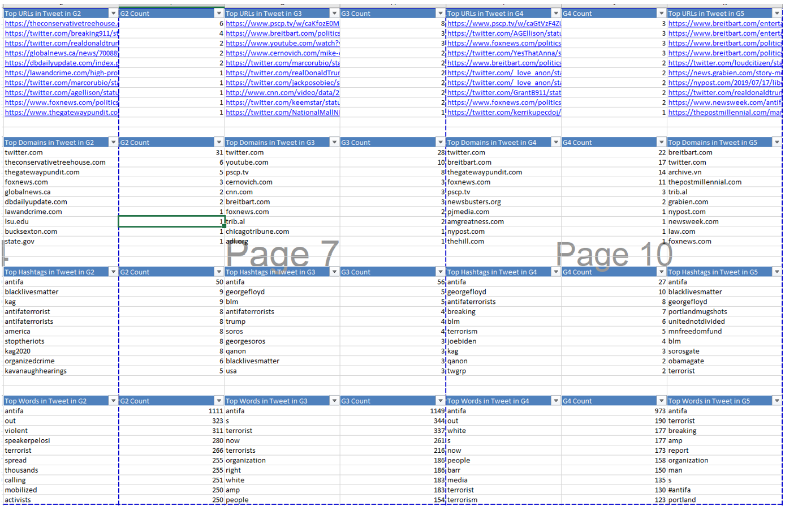
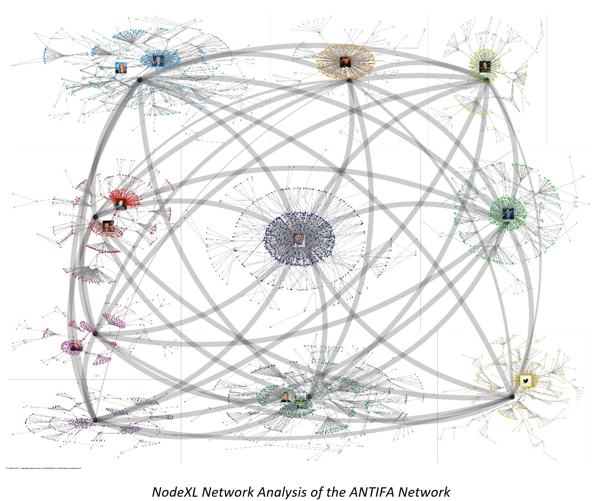
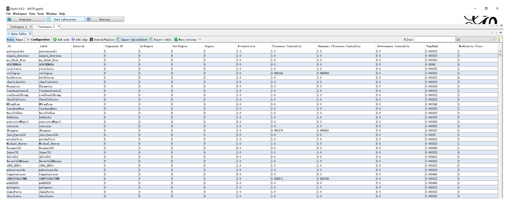
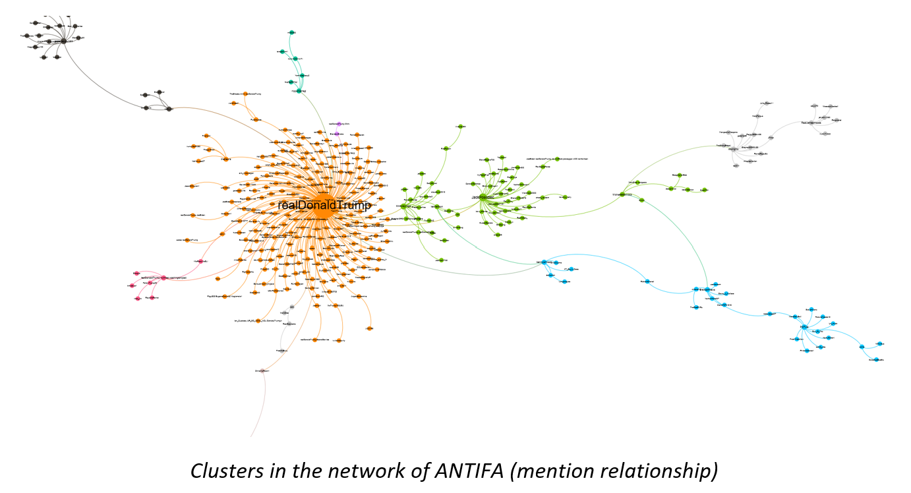
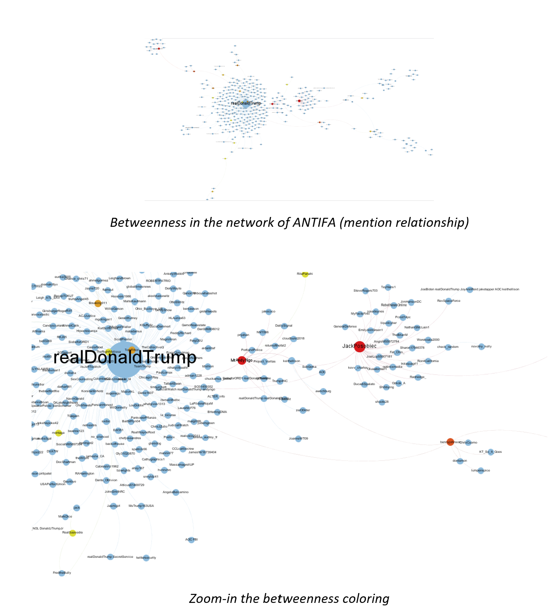
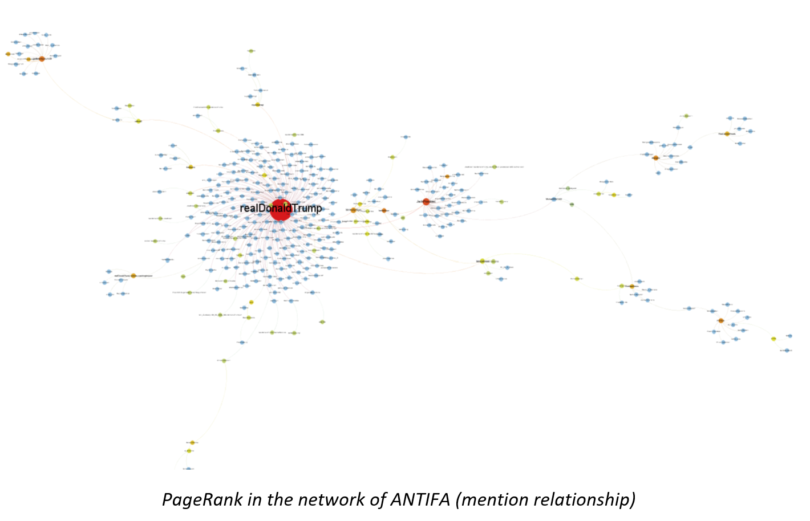

Comparing Gephi and NodeXL for Twitter Network Analysis
June 9, 2020 By Joyce Jiang

Photo by Alina Grubnyak on Unsplash
I used two network analysis tools (Gephi and NodeXL) to compare the Twitter networks of ANTIFA related content. Since network analysis is more likely to reveal some insights though its visualization instead of providing scientific results and conclusions, this method has been used a lot for exploring a phenomenon or a research question rather than proving a hypothesis.
Network analysis is composed by edges and nodes. Edges are the relationship between nodes. In the Twitter network, nodes represent Twitter users and edges represent engagement between users, which includes retweet, replies, and mentions.

I explored two network analysis tools in this report: NodeXL and Gephi.
NodeXL is an excel template for conducting network analysis. It has been used a lot in social media research because of its capability of scraping data from Twitter, Facebook (now disabled), Flickr and MediaWiki. It is also powerful in clustering a large dataset, performing elementary sentiment analysis and analyzing key words in each cluster.
Gephi is used by both beginning and advanced level of users and it is also the most popular open-source tool among network analysts and researchers. The advantage of Gephi is its computational capability of calculating all network tonologies, such as PageRank, Betweenness, Closeness, and Degrees, etc., in the shortest time.
Terminologies
- Clustering: the network could be clustered into sub-communities/ clusters, usually achieved by embedded algorithms in the network analysis tool.
- Sentiment analysis: identify the sentiment of the text, usually achieved by identifying positive and negative adjectives in sentences.
- Degree: number of edges connected to one node
- In-degree: Number of directed interactions received by one node
- Out-degree: Number of directed interactions sent out by one node
- Closeness: average of shortage path of one node to every other node, explains how close a node connected to other node.
- disease spread
- Betweenness: percentage of shortest path that cross the node
- social network
- identify gatekeeper of the spread work (information flow)
- betweenness node: monitoring network
- PageRank/Eigenvector centrality: measure of node’s importance
- Iterative matrix computation that gives more weight to the nodes that are important
- Google page rank (Wikipedia, CNN get more credits for links)
Twitter network
Twitter is mostly used by international users and the majority of them are US users. Twitter network is usually dominated by journalists and media outlets, which makes it a good starting point to analyze news and trending topics with international voices and opinions.
I chose Twitter network to start with because it is easier to obtain data from Twitter than from other social media platforms (Instagram and WhatsApp are not open platforms and Facebook applied restriction to scraping data recently). Another reason is that Twitter network is the most frequently-analyzed social media network among researchers because of its international feature, which means I could find more references for analyzing this network. The limitation of Twitter is that it only allows developers to trace and scrape data from one week before, so it works better for news and trending topics like ANTIFA than ongoing discussion and topics like public health.
NodeXL
NodeXL has both free version and pro version. Its Pro version has plenty of useful functions such as calculating network metrics and directly importing data from Twitter and other social media. For its free version, the limit of Twitter data to be collected is 2000 tweets and it includes have any textual analysis for Twitter datasets. NodeXL captures all kinds of engagement on Twitter, which include tweet, retweet, replies, and mentions. If you only want to explore the clustering function and groups-in-the-box feature, you can start with the free version.
Clauset-Newman-Moore (CNM)
The tool has an embedded clustering algorithm called Clauset-Newman-Moore (CNM), which is suitable for large network clustering.
CNM is handful for analyzing a large dataset because its algorithm is similar to a “decision-tree” rationale that CNM will keep clustering until there are only single nodes left in this network. With this feature, CNM usually creates from fifty to thousands of clusters for a large and complex network. I found CNM is very accuracy in grouping similar content into one cluster. However, the drawback is that CNM is usually too clustered for most network because this algorithm “wants to keep clustering to the end” when there’s only scattered nodes left. What most researchers have done is deleting the smaller clusters, and only keep the most prominent one (around 10-15 clusters). Though most of the clusters are deleted, around 60-90% data could be covered by the most prominent clusters.
Groups-in-box (GIB) Visualization
NodeXL has its powerful groups-in-box (GIB) visualization like what I show below. Additionally, with its text analysis functions, NodeXL could label each group with the most frequent words, the most mentioned users, the most replied users and other features as the group label. I illustrate a comparison of both labeled and non-labeled networks.

Textual Analysis
This’s the function that has been found very useful for most communication researchers because you can compare the most frequent words and domains in each cluster as well as the most mentioned users.

Web domains could reveal the source of information in each cluster. For instance, ANTIFAnetwork is dominated by partisan news outlets, especially right-wing media such as Foxnews, Breitbart, The Conservative Treehouse, The Gateway Pundit, etc. The only exceptions are CNN, a left-wing media channel, and YouTube, a media platform.
Network Analysis
- Scaling
After selecting all metrics for computation, I usually start with the in-degree metric so I could identify the major figures in each cluster. I would set node size of user with in-degree values above 10% of the highest in-degree value to 1000, instead of using autofill function. The autofill function would assign size numbers that have linear relationship with in-degree values, but this would make some prominent nodes hard to be seen in the network. Using profile photos for node shapes would further reduced the visibility of important nodes.
- Identifying Opinion Leaders
Once I visualize the major players in each cluster, I would check their bios and recent posts on Twitter. Some of the influencers are easy to identify, such as Trump and CNN. Since most of the networks I analyzed were related to politics, prominent users usually have party affiliations or support some kind of political movement (eg. activist, pro-democracy, etc.). Some of them might be actively engaged with the conversation, some of them might just have been mentioned frequently in this conversation. You need to check which kinds of engagement do they have in this network. I would check this by selecting these influencers for both Vertex 1 and Vertex 2 on the Edges sheet and see what kind of tweet content and engagement do they have.
- Cluster Analysis
Once I identify important players, I will be able to find some similarity of users within one cluster. Sometimes you would realize that several clusters are discussing some topics, so you can group them into one giant cluster. It’s not necessary that all prominent users in one cluster have the same political stance or affiliation. For instance, you would find republicans and democrats interact within one cluster (light blue), or activists engage with human right organizations in one community.

Strengths
- It’s more user-friendly than Gephi at the beginning. Most users would be familiar with Excel than exploring a Java-based software like Gephi.
- It’s good for large network clustering and illustrating through GIB function.
- Additionally, you can play with the fancy visualization in NodeXL. My favorite one is selecting Twitter profile photos for node shapes.
- Another big advantage is that you can check all metrics, details, graphs, and content on the same dashboard. In Gephi, you probably need to switch back and forth between Gephi’s data lab, visualization, and you own workbook which stores Twitter dataset.
Weaknesses
- This software is too slow in processing the network analysis. It takes a super long time to scrape data from Twitter (as compared to Python and Nvivo I used for web scraping) and sometimes this software could crash when you are calculating metrics, using autofill function, or visualizing you network.
- Although NodeXL includes all tonologies that Gephi has for network analysis, it only takes Gephi couple second to get those metrics. For NodeXL, it takes around couple minutes.
- CNM cluster is generally good for a large network, but I have found this grouping method to be too clustered and eventually, several clusters just contain similar content. GIB function also lose some interaction between each community and influencers because you could be too focused within each sub-network.
- The visualization is not as pretty as it is in Gephi. Gephi has more choice for color and size selection and this process is much smoother than it is in NodeXL.
- There’s no vector graphic choice for export the network graph. Vector graphic creates graph whose elements won’t be blurred when users enlarge the graph. Exporting to PDFs is a vector graphic choice. The vector graph would be very useful when you want to share all visualized information in the network instead of simply illustrating a brief snapshot of it.
Gephi
This tool can visualize the relationship of most tonologies in network analysis. I will address three of them in the following networks:
- Clusters: identify different communities in a Twitter network
- PageRank: iterate the importance of all nodes in a network, identify the importance of the connected nodes to one node, and determine the importance of this node (similar to Google Page Rank)
- Betweenness: identify gatekeepers of the spread work, the node with high betweenness sever as a hub or control the information flow between communities
Data Preprocessing
This’s an extra step for Gephi. I use the following tools for this step:
- Nvivo for scraping Twitter dataset (could be replaced with Python)
- Python for data cleaning (edge and node dataset)
- Gephi for network analysis
Since I use other tools to scrape data from Twitter, I usually analyze retweet and mention engagement on Gephi in separate networks.
Data Laboratory
Gephi doesn’t have those fancy tools like GIB or textual analysis in NodeXL, but it’s more user-friendly for researchers and data scientists who are interesting in presenting a beautiful network graph. Keeping network graphs and data laboratory in separate dashboard, Gephi is able to compute network metrics much faster than NodeXL does. You can find all calculated network metrics on the data lab dashboard.

Cluster Analysis
Here’s a sample of a color-clustered ANTIFA (retweet) network. We can see that the Gephi network illustrates relationships between each cluster and influencer in a more readable and presentable way. The limit is that for some complicated networks or network without prominent clustering features, Gephi’s embedded clustering algorithm Modularity Cluster won’t be able to assign nodes properly to the sub-communities they belong to. Although we could use other Gephi’s plug-in clustering algorithm, they are super slow and could easily crash this software for a large dataset. Zoom-in this network, you will be able to find similar large nodes to what we showed in the NodeXL network.
With Gephi’s network, I would be able to tell which community dominated the discussion of ANTIFA (retweet):
- The pink cluster which is composed by mainly republican figures.
- The users in the green cluster are mainly democrats. Clearly this sub-community seldomly interact with the pink cluster, and they need several intermediate steps to even reach out to a node from the pink group.
Comparing ANTIFA retweet and mention clusters
These two networks show similar clustering results of grouping republicans and democrats to different clusters, which are also the two clusters that dominated the conversation of ANTIFA. The difference is that republicans’ community is not that segregated from the democrats’ one. This also makes sense because it would be more possible to find political figures mentioning people from different parties than directing retweeting their tweets.

Centrality Analysis
I would explore the centrality of important nodes with Degree, PageRank and Betweenness metrics. For ANTIFA retweet, these metrics did not give an intuitive illustration, so I used it’s mention network to demonstrate these metrics.
Degree
I would use degree metrics for scaling purpose. The higher the degree, the larger the node is, and the more central the node is. This rule applies to both in-degree and out-degree values. It’s researchers’ discretionary decision to select between in-degree, out-degree or total degree for visualization. My recommendation is that:
- For a retweet network, start with filtering and scaling in-degree values because we don’t want to include “fan’s activity” in the retweet network.
- For a mention network, start with total degree because there won’t be a lot of edge relationships left in the mention network, which means all links in this network is meaningful!
Obviously, Trump and other center of each cluster in the ANTIFA mention network have higher degree values and large nodes. I usually keep the same scaling for all nodes by using only their degree values for sizes and switch coloring options between clustering, betweenness and PageRank to analyze the entire network relationship.
Betweenness
I would use betweenness or PageRank metrics for coloring purpose. The higher the betweenness, the redder the node is, and the more central the node is.
Although Trump is the largest node in the ANTIFA mention network, he doesn’t have a high betweenness as compared to Jack Posobiec or Andy Ngô. Clearly, central nodes in sub-communities would have high betweenness values because they effectively promote the information flow between different communities.

PageRank
The higher the PageRank, the redder the node is, and the more central the node is. Differing from the last graph, Trump is almost the only node that has a high PageRank because it has been connected to other important nodes, such as Jack Posobiec. A node would have a higher PageRank value when it connects to more journalists, political figures, and media channels.

Strengths
- Gephi is free and also the most used open-source network analysis tool among researchers.
- It takes only couple of seconds for Gephi to calculate network metrics.
- Gephi has more flexibility in its network visualization. It has more sizing and coloring options to create a presentable network.
- Gephi has many embedded layout algorithms and plug-in for users to explore different options of network optimization.
- Researchers can focus on more network metrics as compared to NodeXL.
- Gephi can export network to a vector graphic format as I mentioned before.
Weaknesses
- It doesn’t have CNM algorithm and GIB option for clustering and sometimes Modularity clustering doesn’t work properly for large or very scattered dataset.
- It’s less user-friendly for beginning level of users.
Summary
NodeXL is easier to use for beginners and it’s specifically handful when analyzing social media networks because it can directly scrape data from social media. Additionally, it’s convenient for users to check back and forth between a network graph and details of nodes and edges. NodeXL has several embedded tools like GIB, CNM clustering, and textual analysis, which would be useful for communication researchers. The biggest drawback is its computational capability, which is much slower than Gephi does.
Gephi is suitable for both beginning and advanced level of users. It is powerful in computing network metrics in shortest time and flexible in providing multiple visualizing options for users.
These tools can be used as complimentary tools for each other to double check clusters and influencers analyzed by each tool.
In the next article, I use a case study of Twitter research results of #NationalSecurityLaw for demonstration. To learn more about network analysis, you can check out